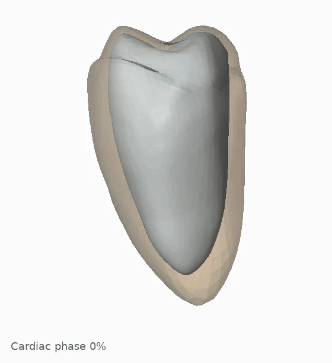

RESEARCH DEMONSTRATIONS / CARDIAC RECONSTRUCTION
From sparse 2D echo
To dynamic 4D cardiac meshes.
Explore patient-specific cardiac surfaces, cross-sectional agreement, and paired CT and cine MRI comparisons.
Explore the reconstructions ↓
01 / STATE-OF-THE-ART COMPARISON
LV reconstruction on the public Control Cohort.
Qualitative comparison of LV reconstruction with Laumer et al. [1] on the public Control Cohort (CC) dataset.
[1] F. Laumer et al. 2D echocardiography video to 3D heart shape reconstruction for clinical application. Medical Image Analysis, 101:103434, 2025.
02 / CROSS-DISEASE ADAPTATION
One framework. Different anatomies.
LV–MYO motion examples across Normal, HCM and MI settings.
03 / HELD-OUT SHAPE ADAPTATION
A view beyond the shape inputs.
A3C and A4C drive shape adaptation. Compare the predicted A2C cross-section with its reference mask before and after adaptation, overlaid on the matched ultrasound frame.
Reference only Prediction only Overlap
04 / 2D OBSERVATION AGREEMENT
Follow the cross-sections through a cycle.
LV sections of the exported mesh compared with the input masks in A2C, A3C and A4C, using the fixed calibrated planes.
Reference only Prediction only Overlap
05 / MULTI-STRUCTURE EXPLORATION
A shared space for the whole heart.
06 / 3D CT EXTERNAL VALIDATION
A different modality. A three-dimensional reference.
Patient-matched LV reconstruction (red) and CT reference (blue). Lower-left insets show the paper's A4C, A2C and A3C mask overlaps.
07 / CINE MRI TEMPORAL COMPARISON
Geometry and volume, in step.
The two paper-selected examples pair each rendered frame with its measured normalized LV volume. Scrub the cycle or press play: mesh and curve marker share the same frame index.
Download MRI mesh + volume-curve GIFs ↓